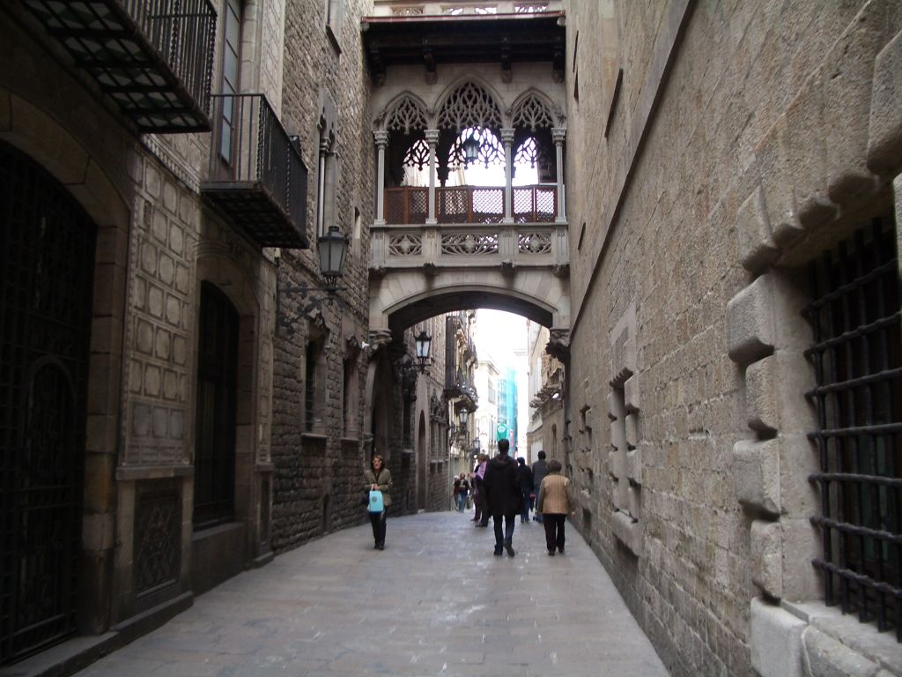

Barcelona útikalauz
T10 jegy
A T-10 jegy egy gyűjtőjegy (kártya formátumú), 10 utazásra vehető igénybe. Ugyanakkor, egy utazás 1 óra 15 percnek minősül, és ezalatt átszállásra is lehetőség van - akár a metrón belül, akár metróról buszra, vagy buszról metróra, vagy akár a reptéri vonatról metróra vagy buszra - de miután elhagytuk a metrót, nem lehet visszatérni, ekkor újabb utat számol. Fontos, hogy ha metróról buszra, vagy buszról metróra szállunk át, a kártyát ismét érvényesíteni kell a metróbejáratnál, vagy a buszon. Azonban, ha 1 óra 15 percen belül vagyunk, a fentiekkel összhangban, nem von le újabb utat. Egy T-10-et egyszerre több ember is használhat, azonban minden utasnak érvényesíteni kell, a metróbejáratoknál pl. miután az első ember áthaladt a kapun, a következőnek hátra kell adnia, és annak is érvényesítenie.
A T-10 Ára 2015-ben 9,95 Euró az 1-es zónában (melybe beletartozik egész Barcelona, és még a repülőtér is). A T10 minden bizonnyal a leggazdaságosabb jegytípus, nagyon sokat kell ahhoz utazni, hogy a napijegy, vagy a Travelcardok jobban megérjék. A T-10, mint a többi barcelonai tömegközlekedési jegy, érvényes a repülőtérre, és repülőtérről közlekedő RENFE-vonatra is.
Repülőtér - szállás (R2 Aeroport - Clot)
RENFE vonatot (R2 Nord vonal) is igénybe lehet venni, ami gyorsabb, olcsóbb, esetleges forgalmi dugók nem befolyásolják, de ritkábban jár mint az Aerobus. Fél óránként közlekedik, kb. 20 perc alatt ér a központba, a Sants, Psg. Graciá vagy Clot állomások valamelyikén lehet leszállni róla a belvárosban, és ezeknél van metrócsatlakozás is. Az utolsó reptéri vonat a repülőtérről 2015-ös menetrend szerint 23:38-kor indul. Az első reptéri vonat Sants állomástól a reptérre 5:13-kor. Ezek után, ill. előtt Aerobus-szal , vagy éjszakai busszal lehet közlekedni. A reptéri vonat menetrendje itt lekereshető (a repülőtér állomása: Aeroport, ezt kell kiválasztani érkező- vagy indulóállomásnak). A repülőtér 2-s termináljától a táblákat, jelzéseket követve elérhető a reptéri vasútállomás, nem olyan rövid gyaloglással, tehát akinek ez probléma, az inkább az Aerobust válassza, ami gyakrabban is jár. Az 1-s termináltól ugyanakkor először gyakran járó, ingyenes transzferbuszokkal kell átmenni a 2-s terminálhoz, ahonnan a vonat indul. A jegyár a vonatra 4,10 Euró 2015-ben egy irányba, de a vonatra érvényes a T-10 gyűjtőjegy, a Hola BCN! Travelcard, a T-Dia napijegy, és a Barcelona Card is (azok birtokában tehát nem kell jegyet venni rá). T-10-el az ár a reptéri vonatra gyakorlatilag 1 EUR.
Csomagmegőrző Barcelonában

Barcelonában 24 órán keresztül nyitva tartó csomagmegőrző automaták találhatók a Sants vasútállomáson (3-as és 5-ös metró) és a Nord buszpályaudvaron (1-es metró: Arc de Triomf állomás). A belvárosban 8:30-22:30-ig nyitva tartó őrzött csomagmegőrzési lehetőség van a Carrer Estruc, 36 alatt (1-es és 4-es metró Urquinaona állomásához közel).
Montserrat

Trans Montserrat annak a jegytípusnak a neve, ami tartalmazza a vonatjegyet BArcelonából Montserrat Aeri, vagy Monistról állomásig, feljutást a kolostorig, ott két siklót: fel a hegyre, és le a barlangkápolnához, valamint még ötször tudtuk Barcelonában metrón érvényesíteni. Ára 29,30 euró
Tickets can be collected from the tourist information point in plaça Catalunya, daily from 8.30am to 8.30pm. (Except 1st January and 25th December) or at the FGC (Catalan Rail) station in plaça Espanya, daily from 8am to 2pm. You must show your printed voucher when you collect your tickets.
http://bcnshop.barcelonaturisme.com/shopv3/en/product/616/trans-montserrat.html
Funicular de Santa Cova: lefelé visz, egy barlanghoz
Funicular de Sant Joan: felfelé visz
http://www.montserrat-tourist-guide.com/en/transport/funiculars-montserrat.html
La Sagrada Familia
A nyári hónapokban, de a legtöbbször máskor is, a rendkívül hosszú sorban állás, a hatalmas tömeg elkerülése végett, érdemes korán, akár már 9 órára érkezni vagy előre jegyet foglalni.
A Nativity tornyon még személyesen Gaudi dolgozott, az egy régebbi torony, az építészeti látnivalók is jobbak, érdekesebbek, és át lehet menni a két tornyot összekötő hídon is, ahonnan sok szépség közelről látszik. Ugyanakkor itt lefele gyalogolni kell, egy szűk csigalépcsőn. Az egyszerűbb építészeti megoldásokat alkalmazó Passion torony ugyanakkor magasabb, így onnan jobb a kilátás, a város érdekesebb részére, és lefelé is lifttel lehet jönni, tehát akik nehezen lépcsőznek, azoknak az ajánlható.
Eljutás: 2-es, és 5-ös metró: SagradaFamilia megálló. Busz: 19, 33, 34, 43, 44, 50, 51, B20, B24. Cím: Carrer de Mallorca, 401, 08013.
Belépő: 15 Euró + 4,5 a torony
Camp nou
A stadiontúra alkalmával az érdeklődők meglátogatják a múzeumot, a csapat öltözőjét, a futballpályát, ahol a gyepen is sétálhatnak, a TV-szobába, és egyéb helyiségekbe is ellátogathatnak, és a végén a kezükbe foghatják a Bajnokok Ligája serleget.
A Camp Noutól 200 m-re lévő Futballárium Barcelonát is érdemes meglátogatni a focirajongóknak, ahol mérsékelt árakon ehetnek-ihatnak is, a visszajelzések szerint finom ételekből.A Camp Noutól 200 m-re lévő (100%-ban) magyar tulajdonú nemzetközi futball bár-étterembe (Carrer de Benavent 7., a Camp Nou 18-as kapujával szemben lévő utca, vasárnap zárva, kivéve a Barcelona hazai meccsnapjain).
Eljutás: 3-as metróvonal: Palau Reial vagy Les Corts megálló, 5-ös metróvonal: Collblanc vagy Badal megálló. Cím: Carrer d'Aristides Maillol, 12, 08028.
Belépőjegy (2015): Stadiontúra, és múzeumlátogatás: 23 Euró.
Nyitva tartás: Stadiontúra és múzeumlátogatás: 09:30-19:30.
Montjuic
Nézzük meg Font Mágica / Táncoló v. mágikus szökőkútat is!
A Barcelona városközpontjához közel található 185 méter Montjuic (szó szerinti fordítása: zsidó hegy) rengeteg látványosságot kínál, melyek közül sok az 1929-es világkiállítás, vagy az 1992-es olimpia alkalmából épült, vagy ezek alkalmával újították fel. Gyalog érhető még el a Poble Espanyol (spanyol falu, belépő 12 EUR) amely egy igen népszerű barcelonai látványosság. Ez gyakorlatilag egy skanzen, amelynek 116 épülete Spanyolország különböző területeinek építészetét mutatja be, ezt bejárva kicsiben egész Spanyolországot láthatjuk.
A domb legrégebbi nevezetessége a csúcsán látható Castell de Montjuic (belépő: 5 EUR), egy hatalmas, 18. századi erődítmény, melynek várfaláról, vagy akár csak a környékéről remek kilátásban gyönyörködhetünk. A dombon számos kert, és park is van, közülük legfigyelemreméltóbb a Nou Jardí Botanic, egy botanikus kert, több, mint 2000 növényfajjal, és a Jardins de Mossen Costra i Lljober, ahol több száz különböző kaktuszfaj él.
Eljutás: 1-es, 3-as és 8-as metró: Placa Espanya megálló. Ez a megálló a Poble Espanyol (spanyol falu), a táncoló szökőkút, és a Palau Nacional megtekintését teszi lehetővé. A Placa Espanyától a Poble Espanyolig 13-as vagy 150-es busszal is lehet menni. A 150-es busz érinti a Montjuic összes látványosságát.
Hospital de Sant Pau
Lluís Domenech i Montaner alkotása szintén a világörökség része. Az 1901 és 1930 között katalán modernista stílusban épült, 100.000 négyzetméteren elhelyezkedő komplexum egészen 2009-ig kórházként funkcionált. 2009-től csodálatosan renoválták, és 2014-től már teljes egészében látogathatók a komplexum lenyűgöző épületei és kertjei. A látogatás folyamán a külső és belső részeknél is többször is rá lehet csodálkozni a hely szépségére, a fantasztikus részletekre, arra hogy egy ekkora kórházat, egy ekkora komplexumot ilyen építészeti igényességgel, ilyen dekorációval építettek. A modernista építészet, a lenyűgöző formák, a szép építészeti megoldások kedvelőinek talán kevésbé ismert, de kötelező barcelonai látványossága.
Eljutás: 5-ös metró: Hospital de Sant Pau megálló. Buszok: H8, 19, 20, 45, 47, 50, 51, 92, 117, 192. Cím: C. Sant Antoni Maria Claret, 167, 08025.
Belépőjegy (2015): 16-29 éveseknek és 65 éven felülieknek: 5,60 EUR. 16 éven aluliak számára ingyenes. Minden hónap első vasárnapján ingyenes!
Nyitva tartás: Április-október: hétfő-szombat: 10:00-18:30, vasárnap és ünnepnapokon: 10:00-14:30.
Katedrálisok: La Seu, Santa Maria del Mar
A La Seu-től 400 m-re keletre van a gyönyörű és lenyűgöző 14. századi Santa Maria del Mar katedrális. 1329-1383 között épült Katalónia tengeri és kereskedelmi fénykorában.
A Santa Maria del Mar Székesegyház az El Born negyedben található, amely a Gótikus negyedtől keletre található, a Via Laietana választja el egymástól a két negyedet. A negyed nagyjából a Carrer de la Princesa, és az Avinguda del Marquès de l'Argentera között található, a Picasso Múzeum is a városrészben van. Ez valószínűleg Barcelona leghangulatosabb városrésze.
Eljutás: L4 metró: Jaume I megálló. Címek: (Pla de la Seu, s/n, 08002), (Plaça de Santa Maria, 1, 08003).
Belépés ingyenes
Arc de Triomf

Barcelona diadalíve az 1888-as barcelonai világkiállításra épült, és annak főbejárataként funkcionált. A Josep Vilaseca i Casanovas tervei alapján készült diadalív jelentősen különbözik Európa többi diadalívétől, pl. a párizsi Arc de Triomphe-tól. Színes téglái a mór stílusra emlékeztetnek.
Eljutás: Az Arc de Triomf rövid sétára van a Parc de Ciutadellától. Metró: 1-es vonal: Arc de Triomf megálló. Cím: Passeig de Lluís Companys, 08010
Parc de la Ciutadella
Barcelona központjának szinte egyetlen zöldterülete a 30 hektáros Parc de la Ciutadella, amely a katalán parlament épületének is helyt ad. Számos barcelonai nevezetességhez hasonlóan ez is az 1888-as világkiállításra épült. A Parc de la Ciutadella egyik leghíresebb része a Cascada, egy monumentális vízesés, és szökőkút, amelyet a római Trevi-kút mintájára építettek, Josep Fontseré tervei alapján, de az építésében, akkor még tanulóként, Gaudi is asszisztált. A 30 hektáros parkban tett látogatás remek kikapcsolódást ígér. A park kis taván csónakázni is lehet, a kacsák mellett, csodálatos környezetben. És persze megemlítendő még Barcelona állatkertje, amely a parkban van, és ahol 7000 állat lakik, továbbá a park számos múzeumnak is helyt ad.
Eljutás: 4-es metró: Ciutadella állomás vagy 1-es metró Marina állomás (némi gyaloglással). Busz: 14, 39, 40, 41, 42, 51, 71, 92, 141, B20, B25, V21. Cím: Passeig de Picasso, 21, 08003.
Gótikus negyed / Barri Gothic

Barcelona gótikus negyede a város óvárosának a központi része. Számos középkori épület van itt, valamint néhány még régebbi, a római időkből származó, a római városfal maradványai is felfedezhetők. A gótikus negyed egy labirintusra emlékeztet: a szűk, kanyargós utcák terekbe nyílnak, melyek különleges, igazi középkori atmoszférát adnak a helynek. A turista minden sarkon valamilyen meglepetésbe botolhat, valamilyen érdekességgel találkozhat: egy templommal, egy palotával, egy múzeummal, egy képtárral, vagy egy tapas-bárral, vagy egy kávézóval. A Ramblához hasonlóan, a gótikus negyed is a zsebtolvajok egyik kedvelt vadászcélpontja.
Eljutás: L4 metró: Jaume I megálló.
La Rambla / La Boqueria piac
Barcelona fő sétálóutcája a széles és hosszú La Rambla, amelyet csodás platánsor szegélyez. Az 1,2 km hosszú Rambla a Placa Catalunya és a tengerparthoz közeli Colombus-szobor között húzódik. A sétálóutca mindig tele van helyiekkel, és turistákkal. A La Rambla sétálóutcán kávézók, bárok, butikok, üzletek, trafikok találhatók. A korzózókat komédiások, zsonglőrök, és mutatványosok is szórakoztatják. Itt található Barcelona 1847-ben nyílt operaháza (Gran Teatre del Liceu), és a legrégebbi színháza is, az 1568-ban alapított, de azóta többször újjáépített Teatre Principal. A Rambla alsó végén található Kolombusz-szobor tetejéről szép panoráma tárul elénk. Ha megéhezünk, semmiképp se a Rambla túlárazott, és nem is kifejezetten jó, kiülős, turisták számára létrehozott éttermeiben együnk (hanem inkább pl. az El Born negyedben). Ez alól csak a La Boqueira piac a kivétel, ahol viszont érdemes valamit megkóstolni. A turisták mellett a zsebtolvajok kedvelt célpontja is a Rambla.
A La Rambla város felőli vége a Plaça de Catalunya téren kezdődik. Ennek másik oldalától nem messze indul a Passeig de Gracia sugárút. Itt láthatóak a Casa Batlló és a Casa Milá nevű épületek.
A La Rambláról nyíló Carrer Nou de la Rambla utcában található Gaudi egyik első lakóháza, a Palau Güell / Güell-palota.
Güell park
A Güell park, a Szent Család templomához hasonlóan, az UNESCO Világörökség része. Az 1900 és 1914 között épült parkot Antoni Gaudi eredetileg egy modern "luxuslakóparknak" szánta, távol a belváros akkori gyárainak füstjétől, azonban a park üzletileg sikertelennek bizonyult olyannyira, hogy senki sem akart itt lakni. Csak két ház készült el, és végül maga Gaudi költözött ide családjával, házában jelenleg a Gaudi-múzeum működik. Az épületek, a sétányok, és a lépcsők, mind-mind egy rendkívül különös fantáziavilághoz hasonlítanak, ezt nehéz leírni, ezt látni kell!
2013 óta belépős a Güell Park műemléki része. Ezt mindenképp érdemes kifizetni, de akinek ez nem fér bele a költségvetésébe, az is látogasson el a Güell Parkba, mivel a belépős részen kívül is egy nagy, szép, izgalmas területet járhat be, és a fizetős részt is úgy-ahogy láthatja kívülről. Érdemes reggel elsőként ide érkezni, mert napközben előfordulhat, hogy akár több órával későbbre adnak csak jegyet, vagy online jegyet venni.
Eljutás: 24-es busszal a Placa de Catalunyától vagy 92-es busszal a Passeig de Graciától. Közvetlenül a bejárathoz tesz le az L4 metró Joanic állomásától induló 116-os busz. Vagy 3-as metró: Lesseps (itt meredeken felfelé kell menni, és sokat gyalogolni, vagy fel lehet szállni itt is a 116-os buszra), vagy Vallcarca (itt lefelé lehet menni egy darabig, majd mozgólépcsőn fel, és felfele csak egy kicsit kell gyalogolni) megálló, majd az irányjelzéseket követve. Cím: Carrer d'Olot, 5, 08024.
Belépő (2015): 8 EUR (online: 7 EUR).
Nyitva tartás: 8:00-21:30 (utolsó belépés: 21:00).

Online további információk